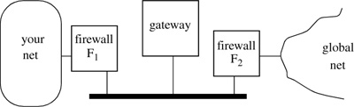

Networking Security Networking Security Networking Security Security Networking Security Networking Security Networking Charlie Kaufman Radia Perlman Mike Speciner Prentice Hall Network Security: Private Communication in a Public World, Second Edition Networking Security Networking Security Networking Security Security Networking Security Networking Security Networking Charlie Kaufman Radia Perlman Mike Speciner Prentice Hall Network Security: Private Communication in a Public World, Second Edition
23.2. Application Level Gateway
Another way to protect your vulnerable network is by use of an application level gateway. The gateway could have two network adaptors and act as a router, but more often it is placed between two packet filtering firewalls, using three boxes (see Figure 23-2). The two firewalls are routers that refuse to forward anything unless it's to or from the gateway. Firewall F2 refuses to forward anything from the global net unless the destination address is the gateway, and refuses to forward anything to the global net unless the source is the gateway. Firewall F1 refuses to forward anything from your network unless the destination address is the gateway, and refuses to forward anything to your network unless the source address is the gateway. To transfer a file from your network to the global network, you need to have someone from inside transfer the file to the gateway machine, and then the file is accessible to be read by the outside world. Similarly, to read a file into your network a user has to arrange for it to first get copied to the gateway machine. To log into a machine in the global network you first log into the gateway machine, and from there you can access machines in the remote network. An application level gateway is sometimes known as a bastion host. It must be implemented and configured to be very secure. The portion of the network between the two firewalls (a single LAN in Figure 23-2), is known as the DMZ (demilitarized zone).

The gateway need not support every possible application. An example strategy is to allow only electronic mail to pass between your corporate network and the outside world. The intention is to specifically disallow file transfer and remote login. But electronic mail can certainly be used to transfer files. Sometimes a firewall might specifically disallow very large electronic mail messages, on the theory that this will limit the ability to transfer files. But often large electronic mail messages are perfectly legitimate, and any file can be broken down into small pieces. Because of such firewalls, many applications that post data for public retrieval on the Internet have automatic mail responders to which you can send an email message requesting the file, and the file will be sent back as an email messageÂseveral email messages, in fact, since such applications also realize that email messages have to be kept small in order to make it through the firewall. It is slow and painful for legitimate users to get files that way. Typically, the file arrives in several pieces. Each piece has to be extracted from the received email (to get rid of email headers). Then the pieces must be rearranged into proper order (since email tends to get out of order) and assembled into a file.
A common application to support on a gateway is http, the protocol used for web surfing. Web browsers were designed with the concept of a proxy. If my machine can't connect to the outside world, I can configure it to forward all http requests to a gateway that will make the requests for me and send me back the results. This has some additional advantages: if many people in my company are requesting the same information, the gateway can cache the responses and not go back to the remote web site if the cache contains the requested information; and if web sites are trying to track my browsing using my IP address, it will be harder because they will get the same IP address (that of the gateway) for all requests coming from inside my company.
|